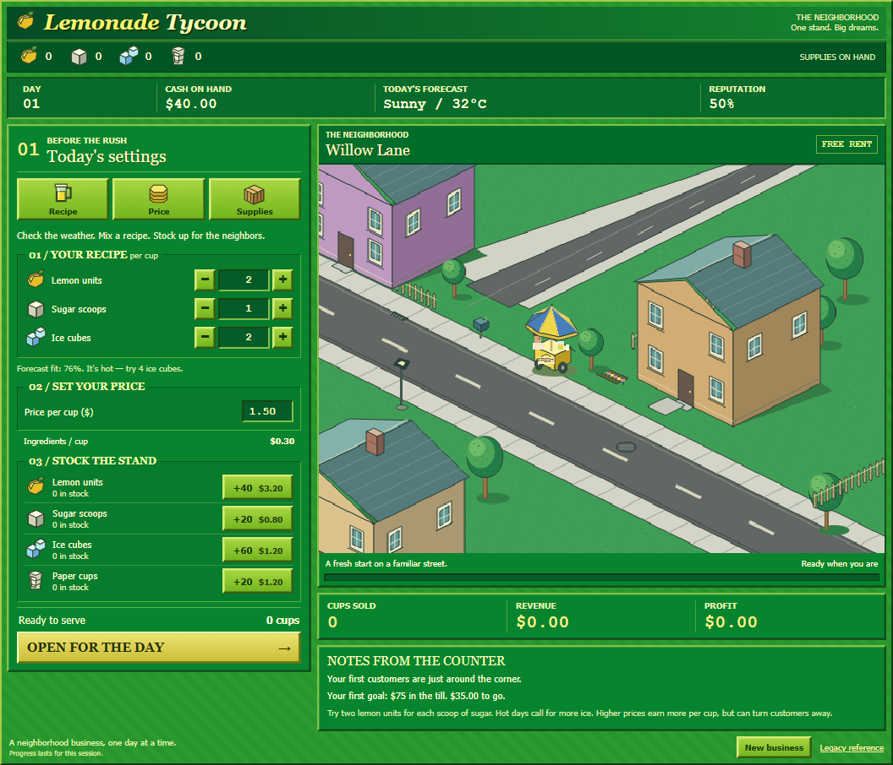

외부 이미지가 로드되지 않았습니다. 원본 링크를 이용해 주세요.
현재 M1 — PR #91 / main 645c44f

녹색 색감은 가깝지만 좌우가 약 35:65입니다. 세 준비 항목을 동시에 펼치고, 장면 위에 큰 개요 줄과 장소 제목을 둡니다. 원작은 약 50:50이고 선택한 작업 하나를 보여줍니다.
비교용 동일 표시 폭. 원작에는 Windows 제목줄이 포함되어 있습니다. 정확한 픽셀 차분이나 구현 시안이 아닙니다.
Windows 영어판 1.1.5 스크린샷을 기준으로, 현재 구현과 구조를 비교합니다. 상세 조사 문서 · M2 마일스톤
2026-09-29 · 이미지 12장 직접 확인. 플레이 영상은 발견했지만 재생 검증하지 못했습니다. 원작 실행·애니메이션 타이밍 측정 결과가 아닙니다.
외부 이미지가 로드되지 않았습니다. 원본 링크를 이용해 주세요.

녹색 색감은 가깝지만 좌우가 약 35:65입니다. 세 준비 항목을 동시에 펼치고, 장면 위에 큰 개요 줄과 장소 제목을 둡니다. 원작은 약 50:50이고 선택한 작업 하나를 보여줍니다.
비교용 동일 표시 폭. 원작에는 Windows 제목줄이 포함되어 있습니다. 정확한 픽셀 차분이나 구현 시안이 아닙니다.
기준 묶음은 staff/marketing 탭을 표시합니다. 다른 자료의 advertising/price 구성과 혼합하지 않습니다. 정확한 구매 반영 시점, 보행 프레임·속도·대기열·사운드는 정지 화면만으로 확인할 수 없습니다. 현재의 컵 단위 레시피를 원작 피처 규칙과 같은 것으로 취급하지 않습니다.